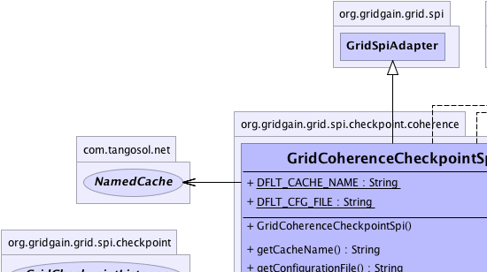
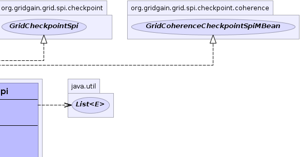
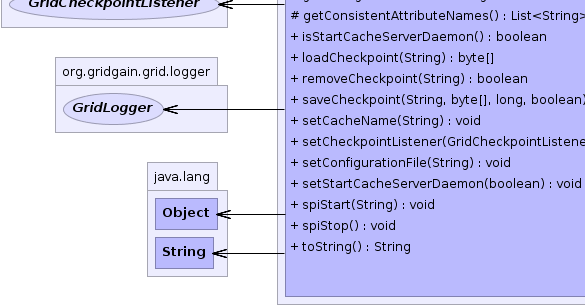
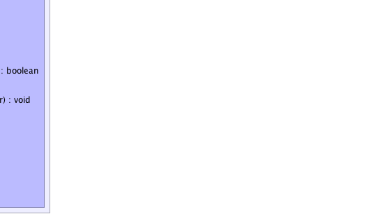

org.gridgain.grid.spi.GridSpiAdapter
org.gridgain.grid.spi.checkpoint.coherence.GridCoherenceCheckpointSpi
org.gridgain.grid.spi.GridSpiAdapter
org.gridgain.grid.spi.checkpoint.coherence.GridCoherenceCheckpointSpi
|
GridGain™ 3.1.1c
Community Edition |
|||||||||
| PREV CLASS NEXT CLASS | FRAMES NO FRAMES | |||||||||
| SUMMARY: NESTED | FIELD | CONSTR | METHOD | DETAIL: FIELD | CONSTR | METHOD | |||||||||
java.lang.Object
@GridSpiInfo(author="GridGain Systems, Inc.",
url="www.gridgain.com",
email="support@gridgain.com",
version="3.1.1c.19062011")
@GridSpiMultipleInstancesSupport(value=true)
public class GridCoherenceCheckpointSpiThis class defines Coherence-based checkpoint SPI implementation. All checkpoints are stored in distributed cache and available from all nodes in the grid. Note that every node must have access to the cache. The reason of having it is because a job state can be saved on one node and loaded on another (e.g., if a job gets preempted on a different node after node failure).
GridCoherenceCheckpointSpi.setCacheName(String))GridCoherenceCheckpointSpi can be configured as follows:
GridConfigurationAdapter cfg = new GridConfigurationAdapter();
GridCoherenceCheckpointSpi checkpointSpi = new GridCoherenceCheckpointSpi();
// Override default cache name.
checkpointSpi.setCacheName("myCacheName");
// Override default checkpoint SPI.
cfg.setCheckpointSpi(checkpointSpi);
// Starts grid.
G.start(cfg);
GridCoherenceCheckpointSpi can be configured from Spring XML configuration file:
<bean id="grid.custom.cfg" class="org.gridgain.grid.GridConfigurationAdapter" singleton="true">
...
<property name="checkpointSpi">
<bean class="org.gridgain.grid.spi.checkpoint.coherence.GridCoherenceCheckpointSpi">
<!-- Change to own cache name in your environment. -->
<property name="cacheName" value="myCacheName"/>
</bean>
</property>
...
</bean>
${GRIDGAIN_HOME}/bin/ggstart.{sh|bat} script to start
a grid node you can simply add Coherence JARs to ${GRIDGAIN_HOME}/bin/setenv.{sh|bat}
scripts that's used to set up class path for the main scripts.

For information about Spring framework visit www.springframework.org
| Wiki | |
| Forum |
|  |  |
|  |  |
| Field Summary | |
|---|---|
static String |
DFLT_CACHE_NAME
Default Coherence cache name (value is gridgain.checkpoint.cache). |
static String |
DFLT_CFG_FILE
Default Coherence configuration path relative to GridGain installation home folder (value is config/coherence/coherence.xml). |
| Constructor Summary | |
|---|---|
GridCoherenceCheckpointSpi()
|
|
| Method Summary | |
|---|---|
String |
getCacheName()
Gets name for Coherence cache where all checkpoints are saved. |
String |
getConfigurationFile()
Gets either absolute or relative to GridGain installation home folder path to Coherence XML configuration file. |
protected List<String> |
getConsistentAttributeNames()
Returns back a list of attributes that should be consistent for this SPI. |
boolean |
isStartCacheServerDaemon()
Gets flag to start Coherence cache server DefaultCacheServer
on a dedicated daemon thread or not. |
byte[] |
loadCheckpoint(String key)
Loads checkpoint from storage by its unique key. |
boolean |
removeCheckpoint(String key)
This method instructs the checkpoint provider to clean saved data for a given key. |
boolean |
saveCheckpoint(String key,
byte[] state,
long timeout,
boolean overwrite)
Saves checkpoint to the storage. |
void |
setCacheName(String cacheName)
Sets name for Coherence cache used in grid. |
void |
setCheckpointListener(GridCheckpointListener lsnr)
Sets the checkpoint listener. |
void |
setConfigurationFile(String cfgFile)
Sets either absolute or relative to GridGain installation home folder path to Coherence XML configuration file. |
void |
setStartCacheServerDaemon(boolean startCacheServerDaemon)
Sets flag to start Coherence cache server on a dedicated daemon thread. |
void |
spiStart(String gridName)
This method is called to start SPI. |
void |
spiStop()
This method is called to stop SPI. |
String |
toString()
|
| Methods inherited from class org.gridgain.grid.spi.GridSpiAdapter |
|---|
assertParameter, configInfo, createSpiAttributeName, getAuthor, getGridGainHome, getLocalNodeId, getName, getNodeAttributes, getSpiContext, getStartTimestamp, getStartTimestampFormatted, getUpTime, getUpTimeFormatted, getVendorEmail, getVendorUrl, getVersion, injectables, onContextDestroyed, onContextInitialized, registerMBean, setJson, setName, startInfo, startStopwatch, stopInfo, unregisterMBean |
| Methods inherited from class java.lang.Object |
|---|
clone, equals, finalize, getClass, hashCode, notify, notifyAll, wait, wait, wait |
| Methods inherited from interface org.gridgain.grid.spi.GridSpi |
|---|
getName, getNodeAttributes, onContextDestroyed, onContextInitialized |
| Methods inherited from interface org.gridgain.grid.spi.GridSpiManagementMBean |
|---|
getAuthor, getGridGainHome, getLocalNodeId, getName, getStartTimestamp, getStartTimestampFormatted, getUpTime, getUpTimeFormatted, getVendorEmail, getVendorUrl, getVersion |
| Field Detail |
|---|
public static final String DFLT_CFG_FILE
config/coherence/coherence.xml).
public static final String DFLT_CACHE_NAME
gridgain.checkpoint.cache).
| Constructor Detail |
|---|
public GridCoherenceCheckpointSpi()
| Method Detail |
|---|
@GridSpiConfiguration(optional=true) public void setCacheName(String cacheName)
If not provided, default value is GridCoherenceCheckpointSpi.DFLT_CACHE_NAME.
cacheName - Coherence cache name used in grid.public String getCacheName()
getCacheName in interface GridCoherenceCheckpointSpiMBean@GridSpiConfiguration(optional=true) public void setConfigurationFile(String cfgFile)
If not provided, default value is GridCoherenceCheckpointSpi.DFLT_CFG_FILE.
cfgFile - Path to Coherence configuration file.public String getConfigurationFile()
getConfigurationFile in interface GridCoherenceCheckpointSpiMBean@GridSpiConfiguration(optional=true) public void setStartCacheServerDaemon(boolean startCacheServerDaemon)
DefaultCacheServer
to avoid reconnection problem between grid nodes.
If not provided, default value is false.
startCacheServerDaemon - Flag indicates whether
Coherence DefaultCacheServer should be started in SPI or not.public boolean isStartCacheServerDaemon()
DefaultCacheServer
on a dedicated daemon thread or not.
isStartCacheServerDaemon in interface GridCoherenceCheckpointSpiMBean
public void spiStart(String gridName)
throws GridSpiException
spiStart in interface GridSpiGridSpiException - Throws in case of any error during SPI start.gridName - Name of grid instance this SPI is being started for
(null for default grid).
public void spiStop()
throws GridSpiException
Note that this method can be called at any point including during recovery of failed start. It should make no assumptions on what state SPI will be in when this method is called.
spiStop in interface GridSpiGridSpiException - Thrown in case of any error during SPI stop.
public byte[] loadCheckpoint(String key)
throws GridSpiException
loadCheckpoint in interface GridCheckpointSpiGridSpiException - Thrown in case of any error while loading
checkpoint data. Note that in case when given key is not
found this method will return null.key - Checkpoint key.
null if there is no data for a given
key.
public boolean saveCheckpoint(String key,
byte[] state,
long timeout,
boolean overwrite)
throws GridSpiException
saveCheckpoint in interface GridCheckpointSpiGridSpiException - Thrown in case of any error while saving
checkpoint data.key - Checkpoint unique key.state - Saved data.timeout - Every intermediate data stored by checkpoint provider
should have a timeout. Timeout allows for effective resource
management by checkpoint provider by cleaning saved data that are not
needed anymore. Generally, the user should choose the minimum
possible timeout to avoid long-term resource acquisition by checkpoint
provider. Value 0 means that timeout will never expire.overwrite - Whether or not overwrite checkpoint if it already exists.
true if checkpoint has been actually saved, false otherwise.public boolean removeCheckpoint(String key)
key.
removeCheckpoint in interface GridCheckpointSpikey - Key for the checkpoint to remove.
true if data has been actually removed, false
otherwise.protected List<String> getConsistentAttributeNames()
getConsistentAttributeNames in class GridSpiAdapterpublic void setCheckpointListener(GridCheckpointListener lsnr)
setCheckpointListener in interface GridCheckpointSpilsnr - The listener to set or null.public String toString()
toString in class Object
|
GridGain™ 3.1.1c
Community Edition |
|||||||||
| PREV CLASS NEXT CLASS | FRAMES NO FRAMES | |||||||||
| SUMMARY: NESTED | FIELD | CONSTR | METHOD | DETAIL: FIELD | CONSTR | METHOD | |||||||||
|
GridGain = High Performance Cloud Computing
|
|

|
|